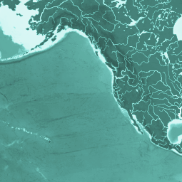
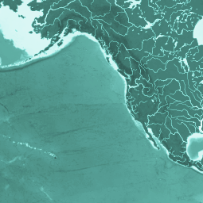

It occurs when carbon dioxide gas (or CO2) is absorbed by the ocean and reacts with seawater to produce acid. Although CO2 gas naturally moves between the atmosphere and the oceans, the increased amounts of CO2 gas emitted into the atmosphere, mainly as a result of human activities (e.g. burning fossil fuels), has been increasing the amount of CO2 absorbed by the ocean, which results in seawater that is more acidic.
THE PROBLEM OF ACIDIFICATION
It occurs when carbon dioxide gas (or CO2) is absorbed by the ocean and reacts with seawater to produce acid. Although CO2 gas naturally moves between the atmosphere and the oceans, the increased amounts of CO2 gas emitted into the atmosphere, mainly as a result of human activities (e.g. burning fossil fuels), has been increasing the amount of CO2 absorbed by the ocean, which results in seawater that is more acidic.
It occurs when carbon dioxide gas (or CO2) is absorbed by the ocean and reacts with seawater to produce acid. Although CO2 gas naturally moves between the atmosphere and the oceans, the increased amounts of CO2 gas emitted into the atmosphere, mainly as a result of human activities (e.g. burning fossil fuels), has been increasing the amount of CO2 absorbed by the ocean, which results in seawater that is more acidic. It occurs when carbon dioxide gas (or CO2) is absorbed by the ocean and reacts with seawater to produce acid. Although CO2 gas naturally moves between the atmosphere and the oceans, the increased amounts of CO2 gas emitted into the atmosphere, mainly as a result of human activities (e.g. burning fossil fuels), has been increasing the amount of CO2 absorbed by the ocean, which results in seawater that is more acidic.
It occurs when carbon dioxide gas (or CO2) is absorbed by the ocean and reacts with seawater to produce acid. Although CO2 gas naturally moves between the atmosphere and the oceans, the increased amounts of CO2 gas emitted into the atmosphere, mainly as a result of human activities (e.g. burning fossil fuels), has been increasing the amount of CO2 absorbed by the ocean, which results in seawater that is more acidic. It occurs when carbon dioxide gas (or CO2) is absorbed by the ocean and reacts with seawater to produce acid. Although CO2 gas naturally moves between the atmosphere and the oceans, the increased amounts of CO2 gas emitted into the atmosphere, mainly as a result of human activities (e.g. burning fossil fuels), has been increasing the amount of CO2 absorbed by the ocean, which results in seawater that is more acidic.


 
